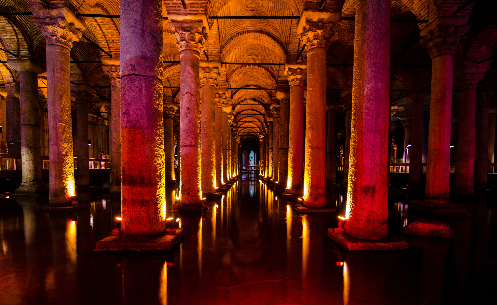

Basipca Cistern

Nestled beneath the vibrant streets of Istanbul, the Basilica Cistern stands as a silent witness to centuries of history, a subterranean sanctuary that echoes the architectural brilliance of the Byzantine Empire. Commissioned by Emperor Justinian I in the 6th century, this colossal reservoir served as a vital water source for the city, showcasing the unparalleled engineering prowess of its time.
Covering an impressive 9,800 square meters, the Basilica Cistern is a sprawling underground complex adorned with 336 intricately designed Corinthian columns, each standing at a height of 8 meters. As visitors descend into this mesmerizing underworld, the soft illumination and the gentle murmur of water create an ethereal atmosphere, transporting them to a bygone era. The reflections of the columns in the water below, combined with the ambient lighting, lend the cistern an otherworldly charm.
One of the most intriguing features of the Basilica Cistern is the presence of two colossal Medusa heads, repurposed from earlier Roman structures. Positioned upside down or sideways, these mythical figures add an air of mystery to the cistern's ambiance. The significance of their placement remains a subject of debate among historians, contributing to the allure of this ancient reservoir.
Beyond its historical significance, the Basilica Cistern has become a cultural and artistic hub, hosting various events and exhibitions. Its unique acoustics have even made it a venue for classical music performances, transforming the underground space into a captivating concert hall.
In conclusion, the Basilica Cistern is not merely a reservoir; it is a living testament to the ingenuity of Byzantine engineering and a captivating destination that allows visitors to immerse themselves in the mystique of Istanbul's past. As you traverse the dimly lit pathways and witness the grandeur of its columns, you can't help but feel a profound connection to the history and architectural brilliance that define this remarkable subterranean marvel.